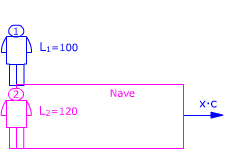
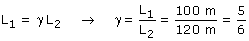
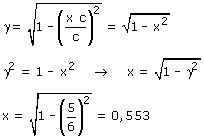
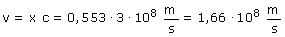

 Observador 1 (Tierra): Observador 2 (Nave) Aplicando la conversión de longitudes resulta:  Conociendo γ se puede calcular la velocidad de la nave. Este cálculo resultará más fácil si expresamos la velocidad como un porcentaje de la velocidad de la luz: v = x·c  La velocidad de la nave espacial es un 55.3% de la velocidad de la luz.  |